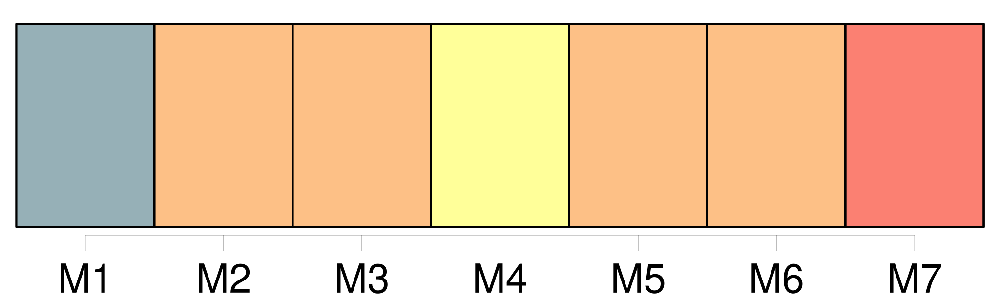
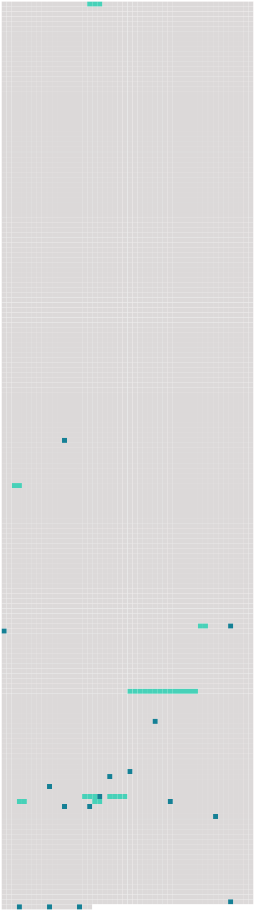

Longueur nb maillons : 24 mentions |
  |
Nous nous aimions profondément, et pour mon compte, j'aurais pu jurer que, de [toute ma famille] , c'était lui qui m'était le plus cher. [176 phrases] S'ils ne sont pas aussi gais qu'avant c'est parce que tu n'es pas avec [nous] , cela va de soi. [25 phrases] Un désir violent, lancinant même, de revoir [les miens] m'est devenu un mal plus sensible que celui de ma hanche. [60 phrases] Comme par miracle, les paroles de Manine m'avaient transportée auprès [des miens] Je vivais avec [eux] , je savais où [les] prendre à toute heure, et plus rien de ce qui se passait chez nous ne pouvait m'être étranger maintenant. [26 phrases]
Il y avait à Paris une maison dans laquelle je pouvais entrer malgré fenêtres et portes closes, et où je trouvais toujours [des êtres capables de répandre sur moi une grande chaleur et beaucoup de lumière] [13 phrases]
D'être boiteuse ne pouvait pas m'empêcher de reprendre ma place à la maison, et j'annonçai chez [nous] la nouvelle de ma guérison avec l'espoir que ma mère allait me rappeler sur l'heure. [23 phrases]
« Enfin, [nous] sommes tous bien contents. [1 phrases]
La voici : [2 phrases] Au lieu du samedi soir, [ils] n'arrivèrent que le dimanche à l'aube. [3 phrases]
À cette heure, où tout faisait encore silence, j'entendis marcher au loin, et peu après je vis s'avancer [le groupe sombre] [que] formait [toute ma famille réunie] Le cœur battant de joie, marchant sur l'herbe pour assourdir le bruit irrégulier de mon pas de boiteuse, j'allais à la rencontre de [ce groupe]
J'allais vite, mais lorsqu'en approchant je pus distinguer chacun [des miens] , une étrange faiblesse m'obligea de m'appuyer contre un arbre. [Eux] , dans le demi-jour, ne me reconnurent pas. [1 phrases] Je voulais [les] appeler, je voulais [leur] faire signe de venir à moi, mais j'étais comme paralysée. [8 phrases]
[Tous] s'étonnèrent de me voir si grande, car maintenant je dépassais ma mère dont la taille était cependant élevée. [36 phrases]
Oncle meunier m'expliqua : |
 |
La ressource peut être téléchargée sur la page Ortolang
Si vous avez des questions ou vous voyez des erreurs, merci d'envoyer un mail à silvia.federzoni89@gmail.com
Site développé par S. Federzoni (contact)